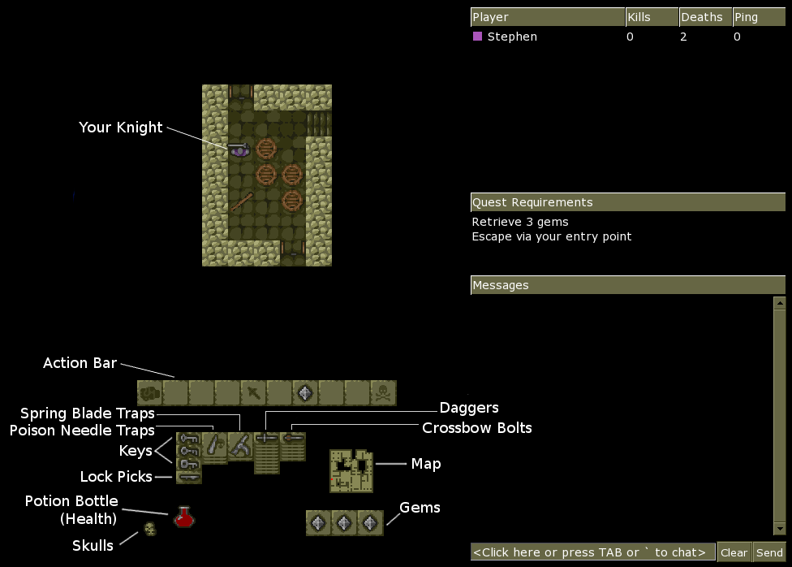

The in-game screen is divided into two areas. The left-hand half of the screen shows the gameplay itself, with a view of the dungeon at the top, and a status area (showing your equipment and a map) below. The right-hand half is taken up with a player list and message area.

(In split screen mode, the player list and message area are replaced by player 2's display.)
The main part of the screen shows the room your knight is currently in. You can only see one room at a time; if you leave the room, the view will "flip" to show the new room instead.
The Action Bar shows icons representing the actions that can be taken by your knight. You can hover your mouse over an icon to see what it does, or click on it to carry out the corresponding action. See Controls for more information.
Any items or equipment carried will be shown as icons in the lower left of the screen. From left to right the icons represent: keys and lock picks; poison needle traps; spring blade traps; daggers; crossbow bolts. Gems are shown separately at the bottom. See Items and Equipment for how these items are used in the game.
The level of liquid in the potion bottle shows how much health you have remaining. If it reaches zero, you die. In addition, the colour of the liquid indicates which magical effects (if any) are currently affecting your knight:
The magical effects are explained under Potions.
Shows how many times you have died. Fortunately, lives are unlimited.
Your knight will automatically map any room he enters, as long as there are no monsters (or other knights) present. This map is shown at the lower right of the status area (just above the gems) with your current location being shown as a flashing dot. There are also certain scrolls which will reveal the locations of your opponent(s), or of certain items, as additional flashing dots on the map.
This shows all players in the game, along with stats on how often they have died and how many other knights they have killed, and also the ping time for each player. (Note that in a LAN game, the ping time for the host is always zero.)
This is a reminder of the objectives for the current quest. Complete these to win the game.
The "Messages" area contains chat messages sent by the players, and also any system messages. To chat, press TAB (or click on the message area with the mouse), type a message, then press RETURN (or click Send). You can also click Clear to cancel a message without sending it.
In team games you can type "/t" (without the quotes) at the start of your message, to send to your team members only, instead of to all players. (Note this is case sensitive i.e. "/T" will not work.) Also, as a shortcut, pressing ` (the key normally above TAB) will activate the chat box and automatically insert "/t", so you can begin typing a team message right away.
While you are typing, you cannot move or fight, but a speech bubble will appear above your knight, to let your opponents know you are typing. (Of course, there is nothing to stop them from killing you anyway. But no true Knight would do such a thing... or would they? :) )